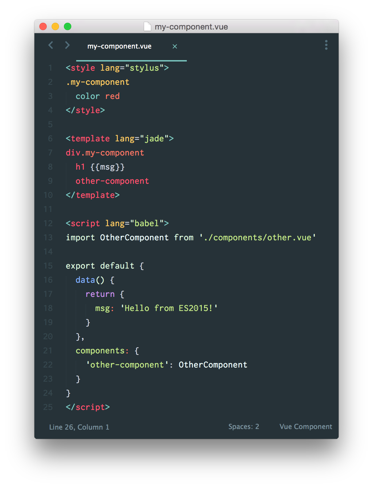

创建大型应用
Vue.js 会设计得尽量灵活——它只是一个接口库，不迁就于任何架构决策。尽管它在快速原型开发中显得非常有用，但对于经验较少的人来说，用它来构建大规模应用程序会有一定的难度。接下来我们会在如何使用 Vue.js 组织大型项目这方面提供一些的观点。
模块化
虽然独立构建的 Vue.js 可以被用作一个全局变量，但是它通常更适合应用在一个模块化系统中，以便更好的组织你的代码。我们建议你在 CommonJS 的模块下撰写源代码 (这是 Node.js 使用的格式，也是 Vue.js 源代码使用的格式)，并通过 Webpack 或 Browserify 把它们捆绑起来。
但是，Webpack和Browserify不仅仅是模块管理器。他们均提供源码转换API，允许你将你的源码用其他的预处理程序进行转换。例如，你可以用babel-loader 或babelify来编写新的ES6/7语法的代码。
一个文件对应一个组件
在一个典型的 Vue.js 项目里，我们将会打散我们的代码，变成若干小的组件，并且在各个组件里很好地把它的 CSS 样式、template模板、JavaScript声明也封装在一起。如上所述，当使用webpack或Browserify时，结合相应的源码转换，我们就可以这样撰写组件了：

如果你用了预处理程序，你甚至可以这样写：

你可以用Webpack + vue-loader 或 Browserify + vueify来编译这些单文件的Vue组件。如果你用预处理程序，推荐用webpack来构建，因为webpack的加载API提供了更好的文件依赖追踪和缓存。
你可以在github找到编译构建的例子：
Webpack + vue-loader
Browserify + vueify
路由
官方 vue-router 模块在活跃开发中，即将发布
你可以手动监听 hashchange 并利用一个动态的component实现一些基本的路由逻辑。
示例：
1 | <div id="app"> |
1 | Vue.component('home', { /* ... */ }) |
利用这种机制很容易接入独立的路由库，如 Page.js 或 Director。
服务器通信
所有的 Vue 实例都可以直接通过 JSON.stringify() 序列化得到它们原始的 $data，没有任何副作用。社区已经贡献了vue-resource插件，提供了一个易用方式，以RESTful APIs的形式进行工作。你也可以使用任何你喜欢的 Ajax 组件，比如$.ajax或SuperAgent。Vue.js也可以和诸如 Firebase和Parse 这样的 无后端服务完美配合。
单元测试
任何兼容 Common-JS 的构建系统都可以。建议使用 Karma测试器结合 CommonJS预处理器 对你的代码进行模块化测试。
最佳实践是暴露出模块内的原始选项/函数。考虑一下这个示例：
1 | // my-component.js |
你可以在你的入口模块中如下使用这个文件：
1 | // main.js |
然后你可以如下测试该模块：
1 | // Some Jasmine 2.0 tests |
因为 Vue.js 的指令异步响应数据的更新，当你需要在数据更新后断言 DOM 的状态时，你需要在一个 Vue.nextTick 回调里做这件事。
部署产品
为了缩小体积，最小化的独立版本 Vue.js 已去除所有的警告信息，但当你用像 Browserify、Webpack 这样的工具构建 Vue.js 产品时，如何进行这样的处理不是那么显而易见的。
从 0.12.8 开始，屏蔽警告的配置工具非常易用。
Webpack
使用 Webpack 的 defineplugin 可以表明生产环境，所以警告片段在 UglifyJS 压缩的时候会被自动丢掉。比如：
1 | var webpack = require('webpack') |
Browserify
只需要在打包命令中把 NODE_ENV 设置成 "production" 即可。Vue 会自动应用 envify 转换并跳过警告处理。比如：
1 | NODE_ENV=production browserify -e main.js | uglifyjs -c -m > build.js |
一个示例
Vue.js Hackernews Clone 是一个应用的例子，它用 Webpack + vue-loader 代码组织、Director.js做路由、HackerNews 官方的 Firebase API 为后端。这不算什么特别大的应用，但它结合并展示了本页面讨论到的各方面概念。
继续：拓展Vue